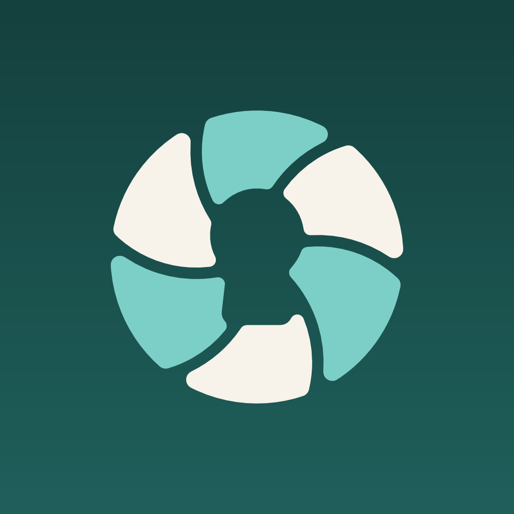

FotoselloDatos no recopilados. Fotosello no tiene cuenta, servidor, anuncios ni analítica. Tus fotos nunca salen de tu dispositivo.
Política de privacidad
Fecha de entrada en vigor: se fijará al publicarla. Esta política se aplica a la app móvil Fotosello para iPhone y Android (identificador de paquete com.walidabahri.fotosello).
1. Responsable
El responsable del tratamiento es Walid Abahri, desarrollador particular, Calle Pablo Neruda 3, 6ºE, 01009 Vitoria-Gasteiz, Álava, España ("nosotros"). Contacto: walidabahri@gmail.com.
2. Resumen
Fotosello está diseñada para que tus fotos nunca salgan de tu dispositivo. La app no tiene cuentas de usuario ni servidores que reciban tus fotos o tu bóveda. No vendemos tus datos ni los usamos para publicidad.
3. Acceso a la fototeca
Fotosello pide acceso a tu fototeca para:
- analizar tus fotos en el propio dispositivo y encontrar las que pueden ser sensibles, como documentos de identidad (DNI, NIE, pasaportes), tarjetas bancarias, capturas con contraseñas o datos bancarios y otros documentos. El análisis usa reconocimiento de texto en el dispositivo (Apple Vision en iPhone), detección de documentos y reglas sencillas. No analiza las fotos en busca de desnudos ni contenido íntimo;
- mostrarte los resultados para que elijas qué proteger;
- copiar las fotos que elijas a la bóveda cifrada y, solo si lo pides, eliminar los originales de tu fototeca.
Todo ocurre en tu dispositivo. Tus fotos, los resultados del análisis y el contenido de la bóveda nunca se envían a nosotros ni a terceros. Puedes limitar o retirar el acceso a las fotos en cualquier momento desde los ajustes del dispositivo. En ese caso podrás seguir eligiendo fotos a mano.
4. La bóveda
Los elementos que guardas en la bóveda se cifran en tu dispositivo con AES-256-GCM. La bóveda se protege con Face ID / biometría o con un PIN que no sale de tu dispositivo. No podemos ver, recuperar ni restablecer tu bóveda. No hay copia de seguridad en la nube: si borras la app o pierdes el dispositivo, puede que no sea posible recuperar su contenido salvo que lo hayas exportado antes.
5. Sin analítica ni seguimiento
Fotosello no usa herramientas de analítica, publicidad ni seguimiento, y no incluye SDK de terceros que recopilen datos. La app no nos envía datos de uso, identificadores del dispositivo ni datos de fallos. Si en los ajustes de tu dispositivo eliges compartir informes de fallos con los desarrolladores, Apple o Google pueden hacernos llegar informes anónimos según sus propias condiciones.
6. Compras
Las suscripciones y compras únicas las procesan Apple (App Store) o Google (Google Play). No recibimos tu nombre, tarjeta ni dirección de facturación. La app solo recibe la confirmación de si tienes una compra activa y la comprueba en tu dispositivo. Al pago se le aplican las políticas de privacidad de Apple y Google.
7. Correos de soporte
Si escribes a walidabahri@gmail.com, solo recibimos lo que decidas enviar: tu dirección de correo, tu mensaje y los adjuntos. Lo usamos únicamente para responderte. El correo de soporte se gestiona con el servicio Gmail de Google, así que tu mensaje se guarda en nuestra cuenta de Gmail. Conservamos los correos de soporte hasta 12 meses después de terminar la conversación y después los eliminamos. Por favor, no envíes fotos de documentos ni otro contenido sensible: nunca las necesitamos para ayudarte. Base jurídica: tu solicitud (art. 6.1.b RGPD) y nuestro interés legítimo en atenderla (art. 6.1.f RGPD).
8. Cesión y venta
No vendemos, alquilamos ni cedemos datos personales a terceros para sus propios fines. Los únicos terceros implicados son Apple o Google, para las compras, y Google como proveedor del correo de soporte que decidas enviarnos.
9. Transferencias internacionales
No transferimos tus fotos ni otros datos de la app a ningún lugar. Gmail lo presta Google (para usuarios del Espacio Económico Europeo, Google Ireland Limited). Google puede tratar el correo en servidores fuera del EEE, incluido Estados Unidos, y afirma que usa garantías como las cláusulas contractuales tipo de la Comisión Europea y el Marco de Privacidad de Datos UE-EE. UU. Consulta la política de privacidad de Google en https://policies.google.com/privacy.
10. Menores
Fotosello no está dirigida a menores de 14 años (edad de consentimiento digital en España según la LOPDGDD). No recopilamos conscientemente datos de menores.
11. Tus derechos
Según el RGPD puedes ejercer los derechos de acceso, rectificación, supresión, limitación, oposición y portabilidad. Como apenas tenemos datos tuyos, la mayoría de solicitudes se resuelven borrando la app. Para cualquier otra cosa, escribe a walidabahri@gmail.com. También puedes presentar una reclamación ante la Agencia Española de Protección de Datos (https://www.aepd.es).
12. Seguridad
Las claves de cifrado se guardan en el almacenamiento seguro del dispositivo (Llavero / Secure Enclave en iPhone, Android Keystore en Android). Ninguna medida es perfecta. Protege el código de tu dispositivo y el PIN de tu bóveda.
13. Cambios
Si cambiamos esta política, publicaremos el texto actualizado en esta página con una nueva fecha de entrada en vigor y, si los cambios son importantes, también lo indicaremos en la app.
14. Contacto
Walid Abahri, Calle Pablo Neruda 3, 6ºE, 01009 Vitoria-Gasteiz, Álava, España. Correo: walidabahri@gmail.com.
English
Read the privacy policy in English. Contact: walidabahri@gmail.com.